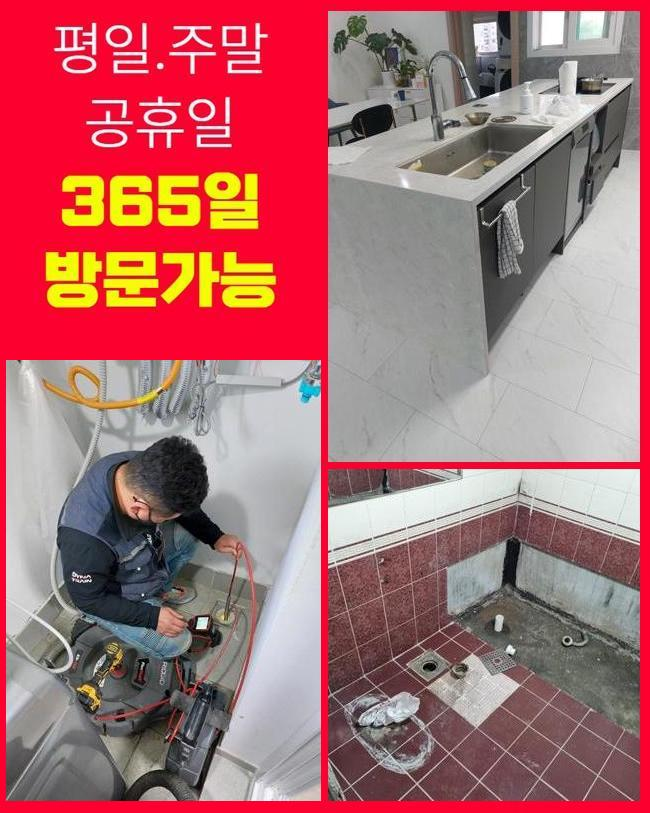
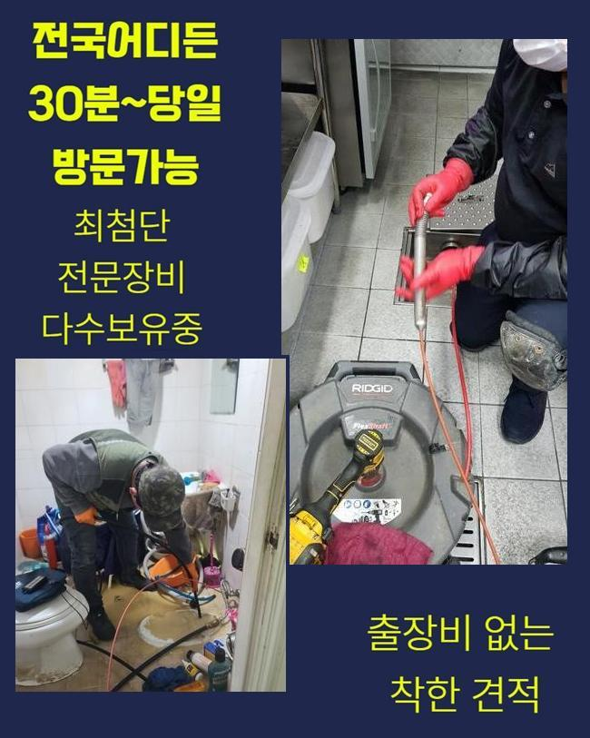
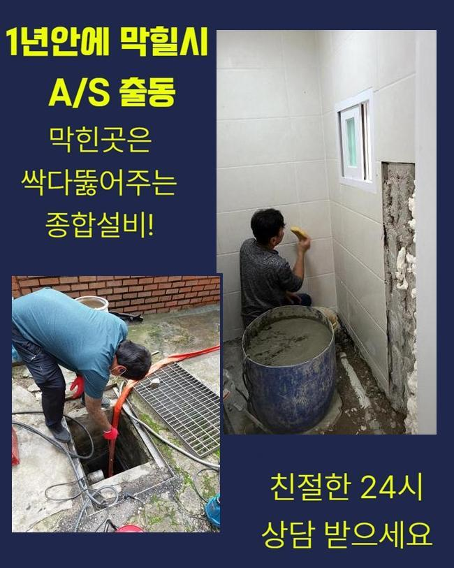
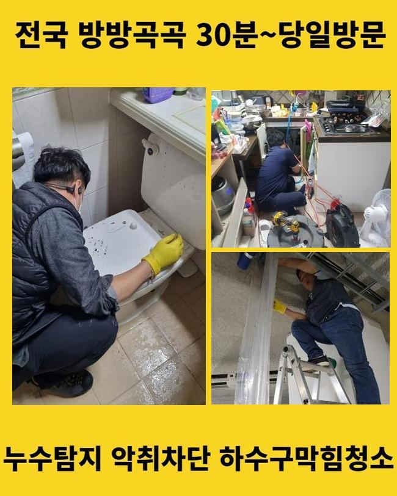
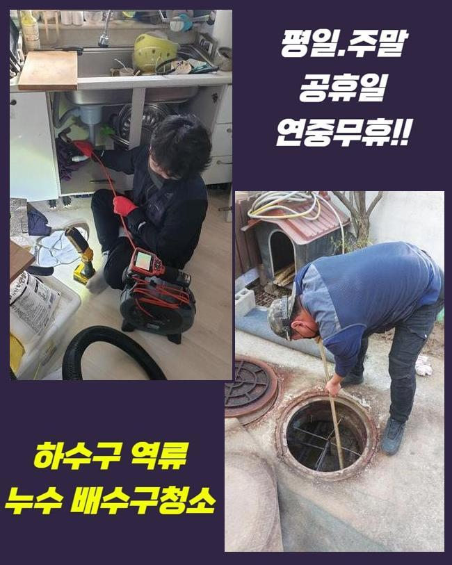
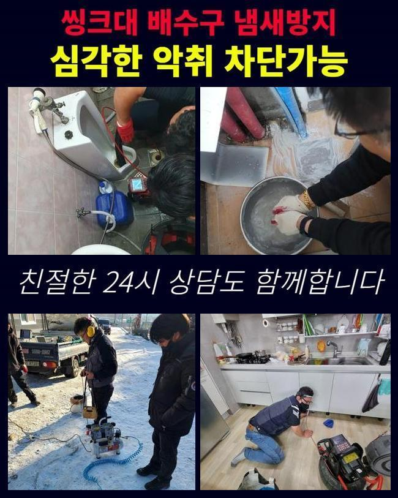
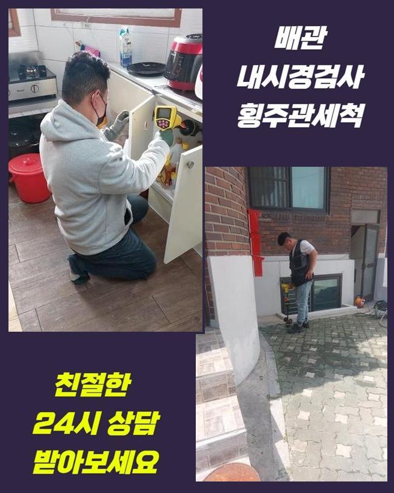

🏠 동두천 동두천동 하수구역류 탑동동 하수구뚫어주는업체 누수
동두천 동두천동 싱크대막힘 전문 시공 후기

📋 작업 개요
- 위치: 동두천 동두천동, 동두천동, 동두천
- 서비스 유형: 싱크대막힘, 하수구막힘, 배관막힘, 누수수리, 역류해결, 뚫는업체, 배관청소, 고압세척, 설비공사
- 작업 일시: 2025. 5. 31. 18:23
- 업체명: 하수구수사대 (010-5615-2118)
🔍 문제 상황
동두천 동두천동 하수구역류 탑동동 하수구뚫어주는업체 누수
주방배관이 막힌상황에서는 여러종류의 대책을 세워 대처할수 있죠
우선은 집안내의 세척장비를 활용하여 정체 범위를 뚫는 방안이 있습니다
뚫어뻥으로 강력하게 눌러주고 순간적으로 이물을 정리하는 건데요
갑작스럽게 물이 안내려간다면 해당 장비를 쓰고 있어요
그럼에도 별다른 변화가 안나타난다면 희석제를 적용하는게 좋답니다
다만 이 제품은 이용하기 전 반드시 주의사항을 확인한뒤 보호장비를 마련해 두는게 중요한 부분입니다
손에 트러블을 가하는 물질이 함유되어 있을 확률도 배제할수 없기 때문이죠
해당되는 상황을 마주하는데 부담감이 있으시다면 집안의 식초나 베이킹소다 같은 것들을 써보시는게 좋죠
그것을 믹스하여 파이프로 방류하면 침전물들이 분해되며 소멸될수 있답니다
데운물을 이와 함께 부어주는 것또한 괜찮은 시도입니다
하수관을 분해해서 클리닝하는 방안도 있습니다
개수대 아래쪽의 하수관을 탈거해 이물이나 기름 찌꺼기를 제거하는데요
분리를 감행하고자 한다면 작업공구를 준비한다음 조립순서를 분명하게 파악하고 조심스럽게 수선해야 됩니다
분리전에는 하수관에 고였던 하수를 우선 정리해 주는게 마땅합니다

🔎 원인 분석
💡 전문가 진단: 정밀 진단 장비를 사용하여 슬러지의 고착 여부를 판명하고 타격/세척 작업을 실시했습니다.
해당되는 시도를 통해서도 정비가 힘겹다고 여겨지신다면 고압청소 장비를 활용하는걸 검토해 보시는게 바람직합니다
배관청소기는 고수압을 바탕으로 하수관을 클리닝하고 고착화된 이물처리에도 적절하다고 볼수 있습니다
혹여 이러한 작업이 불가능한 상황에서는 배관기술자에게 조치를 받아보시는게 바람직하다 말씀드립니다
어설픈 기술로 과정을 감행하면서 배수관이 망가지는 일이 나타날 가망도 큽니다
또한 배수관의 정례적인 관리 역시 불가결합니다
설거지중에 발생한 각종 이물이나 기름성분이 적체되지 못하도록 관리하고 합당한 방도를 마련해서 설비를 보존하는거죠
그리 조치하면 배관고장을 방예할수 있답니다
주방배수관에서 막힘이 생겨서 의뢰주신 현장에 도착하여 저희팀은 신속하게 배관을 진단해 보았어요
정체가 일어난 자리가 예상한 것보다 넓게 퍼져있었기에 명확한 조사가 필수였습니다
이에따라 저희들은 타공시공을 일단 감행하기로 했는데요
금번 세대는 굴착 작업으로 정비를 안한다면 처리하기 힘든 상황이었기 때문이죠
타공공정은 체증이 일어난 지점에 근접한 위치까지 이동할수 있게끔 시행하였어요
공사를 단행하기전 주위에 지저분한 것들을 치우고 보호장비를 준비하게 되었죠
개수대 주변에서 저희는 이런 방식으로 배관안에 고인 이물과 노폐물을 소제하게 되었습니다
공정중에 자주 발발하는 변수를 철저하게 고려해가며 신중히 시공하였죠

🔧 작업 과정
타공업무가 마무리되고 배수관 파이프 안을 검점하였더니 음식찌거기와 기름때가 적층되어 있다는 것을 확인하였죠
주방의 하부장에서 저희는 곧장 내시경기기를 이용하여 내측을 검사하기로 했어요
배수관 청소기는 작은 틈에서도 정밀하게 관로안의 모습을 제공해서 사태를 더더욱 빈틈없이 인지하도록 조력하죠
내시경기기를 투입하니 즉각적으로 관로안의 막힘상황이 목도되었습니다
꼼꼼하게 관측해보니 안에 누적된 잔재들이 파악되었죠
노폐물들은 슬러지 뭉치와 기름층으로 형성된 상태였고 그것은 물막힘의 주된 원인이었어요
카메라를 사용하여 정체된 구간을 자세히 살피며 명백한 지점을 기록했습니다
공정을 진행하면서 총체적인 상황을 점검해나가며 부가적 세척 방안을 생각해낼수 있었죠
내시경카메라의 도움으로 정체의 이유와 종류를 정확하게 파악하였기에 추후세정에 대한 플랜을 마련하게 되었죠
배관내시경으로 파악한 사안을 기초로 제일 효율적 방안을 모색했기 때문에 소모되는 시간을 단축하게 되었던거죠
이곳에서 세척을 시행하면서 짬짬이 고압청소기를 통해 배관을 정리해주기로 하였는데요
장비의 호스를 관로에 넣은뒤 고수압으로 단단해진 찌꺼기들을 없앨수가 있었답니다
배관속으로 하수가 흘러나가며 각종 퇴적물과 기름성분이 사라지는 광경이 내시경기기에 선명하게 파악되었죠
해당하는 작업은 개수대의 배수관정비에 아주 좋은 결과를 가져다주었죠
압력을 조절해가며 상황에 맞춰 세정작업을 속행해 나갔습니다
잔존물들은 더 이상 잔류하지 않게끔 세심하게 업무를 시행했습니다
고압청소기를 이용해 청소하며 배수기능이 점차적으로 정상화되는걸 확인하게 되었답니다
고압청소기를 통해 청소를 한뒤 한번더 내시경 카메라로 관로를 진단해 보았어요
그랬더니 처음상태와 비교해서 정말 깨끗해진 배관면을 검증할수 있었어요
관속을 채우고 있던 퇴적물들이 거의다 없어져 배수성능이 복원되었다는 사실을 간파하고 과정을 마무리하게 되었답니다
고전압으로 뚫음을 실시하는 것이므로 더 정확하게 작업해야 됐죠
자칫 잘못하면 예기치않은 정황이 일어날수 있죠
그렇기 때문에 저희팀은 여러가지 요인들을 총체적으로 생각하면서 업무를 실시하였습니다
평균적인 막힘현장과 비교하여 처리가 고약한 상태였지만 다행으로 조속하게 종료되었습니다


✅ 작업 완료
싱크대주변을 정비하고 싱크대의 배관을 마지막으로 테스트해보았어요
정상적으로 빠져나가는 모습을 수회 확인하였고 고객님에게는 싱크대의 하수구 세척법을 설명드렸죠
배관카메라와 고수압청소는 이번 현장의 해결에 필수적이었습니다
물막힘이 일어났다면 하루라도 빨리 고치는게 필수적입니다
저흰 의뢰인의 스케줄을 생각하고 내방해 드리며 작업하고 있다는걸 알려드립니다
배관이 막혔다면 내버려두지 마시고 저희측에 문의해 주세요




⚠️ 베란다 누수 및 방수 관리 방법
- ✅ 비가 많이 올 때 창틀 주변이나 아래층 천장에 얼룩이 생기는지 정기적으로 확인해 보세요.
- ✅ 우수관 주변 실리콘 마감이 들뜨거나 깨진 틈새가 있는지 손상 여부를 수시로 체크하세요.
- ✅ 베란다 바닥 타일의 줄눈(메지)이 소실되면 그 틈으로 물이 침투하여 누수가 유발됩니다.
- ✅ 누수 의심 증상 발견 시 방치하면 아래층 손실이 커지므로 즉시 전문가의 진단을 받으십시오.
💡 핵심 정리
- 확실한 장비 작업(내시경 점검 및 샤프트 스케일링)으로 원인을 뿌리 뽑습니다.
- 작업 후 1년 이내에 동일한 부위 재발 시 100% 무상 A/S 서비스를 보장합니다.
- 서울 · 경기 · 인천 전 지역에 24시간 언제든 긴급 출동할 수 있도록 항시 대기 중입니다.
❓ 자주 묻는 질문 (FAQ)
🚨 동두천 동두천동 싱크대막힘 문제로 고민이신가요?
정확한 원인 진단과 확실한 시공으로 재발 없는 해결을 약속드립니다.
24시간 긴급 출동 | 서울 · 경기 · 인천 전지역 | 1년 내 재발 시 무상 A/S